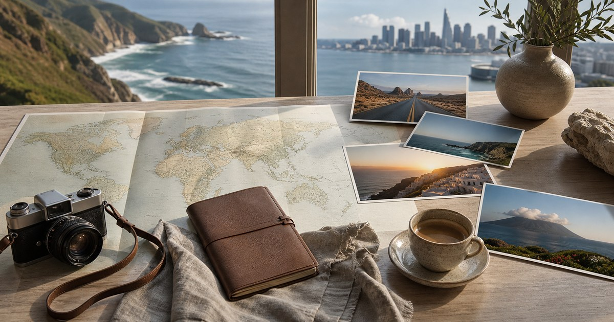

2026 全球五大最新熱門旅遊景點：五個正在改變旅行節奏的地方
2026 的熱門旅行不只關於打卡，而是日蝕、百年公路、海岸保護、島嶼慢旅與奧運山城共同塑造的新節奏。

2026 年的熱門旅行，不再只是追逐一個漂亮地標，而是在世界重新安排節奏時，選擇一種更有判斷的抵達。本文依據公開旅遊榜單、官方活動與可查證的 2026 事件，整理五個值得放進清單的目的地；它們的共同點不是喧鬧，而是正在形成新的旅行理由。
先說明：這不是唯一排名，而是編輯選擇
旅行榜單最容易失真之處，是把「熱門」寫成絕對答案。這份清單不宣稱覆蓋所有值得去的地方，而是從三個條件交叉判斷：2026 是否有明確事件或旅遊動能、目的地是否能提供文化與自然層次、以及它是否值得讀者提前規劃。
我們參考了 National Geographic 的 Best of the World 2026、Tripadvisor Travelers' Choice Trending Destinations 2026，以及 Route 66、日蝕與奧運相關官方資訊。榜單提供線索，但真正的判斷仍回到旅行質地：抵達後能看見什麼、感受到什麼，以及那個地方如何回應此刻的生活情緒。
2026 的旅行有一種明顯轉向：人們不只想去「更多地方」，而是想用一次旅程重新校準速度。火山島、衝浪海岸、日蝕路徑、百年公路與山區奧運場域，都指向同一件事：我們開始在壯闊景觀裡尋找更克制的安排。
- 以公開榜單與官方事件作為基礎，不把社群熱度當成唯一理由。
- 優先選擇能同時提供自然景觀、文化脈絡與旅行節奏的目的地。
- 所有活動、交通與開放資訊仍需在訂票前回到官方頁面確認。
Madeira：火山島的慢旅，正在取代過度擁擠的海島想像
Tripadvisor 將葡萄牙 Madeira 列為 2026 Trending Destinations 世界榜首，理由並不難理解。這座大西洋島嶼有火山岩壁、天然海水池、levada 水圳步道、霧氣纏繞的森林，也有一種不像度假村那樣急著表演自己的安靜。
Madeira 的吸引力不在於把行程塞滿，而在於它讓旅人重新理解「島嶼」這件事：不是只有沙灘和泳池，而是垂直地形、海風、山路、酒香與清晨光線構成的生活速度。它適合想要自然，但又不想把自己交給荒野的人。
真正值得注意的是，Madeira 的熱門不是喧嘩型的爆紅，而是低調成熟的上升。對台灣讀者來說，它需要更長的轉機與時間成本，反而適合安排成一趟十天以上的深度旅程，而不是匆忙插進歐洲行程的附錄。
編輯判斷：若你想找的是乾淨、節制、有自然劇場感的島嶼，Madeira 比許多已被過度消費的海島更值得研究；但若你期待的是全天候沙灘派對與高密度夜生活，它不一定是最準確的答案。
- 適合：步道、自然池、海景公路、安靜旅宿與慢節奏餐桌。
- 先確認：航班轉機、租車需求、山路駕駛與季節天候。
Elite 嚴選
Puerto Escondido：衝浪海岸從隱密變成世界焦點
墨西哥 Oaxaca 海岸的 Puerto Escondido，在 Tripadvisor 2026 Trending Destinations 中名列前段，也被點出其衝浪海岸與交通可及性正在被重新看見。這裡的關鍵不是把它寫成下一個 Tulum，而是保留它原本更粗礪、更貼近海潮的質地。
Zicatela 的浪、低矮街屋、傍晚海邊的鹽分與煙火氣，讓 Puerto Escondido 有一種還沒完全被精品化的吸引力。它適合願意接受不那麼平整服務節奏的旅人：白天跟著海和陽光移動，晚上在開放式餐桌旁慢慢吃一頓魚。
它的風險也在於此。當一個地方被世界看見，房價、遊客密度與地方生活的壓力都會上升。2026 若要前往，應把住宿區位、交通時間、海況安全與當地社區承載量放進判斷，而不是只看一張落日照片。
編輯判斷：Puerto Escondido 最珍貴的不是「還隱密」這個標籤，而是它提醒旅人，海岸旅行可以不必完全被度假村語言接管。真正好的行程，應該把衝浪、自然、餐桌與地方節奏留在同一個尺度裡。
- 適合：衝浪文化、海岸餐桌、鬆弛但不懶散的假期。
- 先確認：海況、安全區域、住宿位置、機場與轉乘安排。
西班牙巴斯克：日蝕只是開場，真正留下的是餐桌與城市性格
2026 年 8 月 12 日的日全蝕，讓西班牙北部成為全球旅人關注的路徑之一。National Geographic 在 2026 旅遊推薦中也提到巴斯克地區，提醒人們不要只為那幾分鐘的天象而來，而要看見日蝕之外的文化密度。
巴斯克的魅力從來不只在風景。Bilbao 的美術館與城市更新、San Sebastián 的 pintxos 餐桌、海岸線與山丘之間的灰藍色光線，都讓它有一種冷靜而準確的美。日蝕會帶來人潮，但真正使旅程成立的，是你在日蝕前後願不願意慢下來。
這也是 2026 旅遊最值得思考的地方：天文事件提供理由，城市本身提供內容。如果只把巴斯克當作觀看日蝕的座標，會錯過它在餐飲、設計、建築和地方語言上的層次。
編輯判斷：巴斯克適合那些想把自然事件和文化旅行合併的人。請不要只為一晚住宿做決定，至少預留三到五天，讓天象、餐桌和城市步調形成一個完整段落。
- 適合：餐飲旅行、建築與美術館、海岸城市、日蝕主題行程。
- 先確認：日蝕觀看地點、天候、交通管制、住宿取消條款。
Route 66：百年公路不只是懷舊，而是重新理解美國尺度
2026 年是 Route 66 的百年節點。National Geographic 將它列入 2026 值得關注的旅行方向；美國 Route 66 Centennial Commission 也已為百年活動建立官方架構。這條公路的魅力，不在於每一站都精緻，而在於它讓人重新理解距離、路標、汽油味與小鎮時間。
對習慣城市旅行的人來說，Route 66 可能顯得太長、太慢、太不精準。但正因如此，它在 2026 顯得有意義。當旅行越來越被演算法安排成短影音片段，一條需要耐心駕駛、停靠、錯過與繞路的公路，反而成為一種抵抗。
Route 66 不適合用一次旅程硬開完全線。更好的方式，是選擇 Chicago 到 St. Louis、Oklahoma、New Mexico 或 Arizona 的其中一段，把 diners、motel、霓虹招牌、原住民文化與沙漠景觀慢慢串起來。
編輯判斷：Route 66 的百年熱度會帶來活動與人潮，但最有價值的仍是它的路感。若你願意把時間交給車窗外的地平線，它會比很多目的地清單更能留下記憶。
- 適合：自駕、公路攝影、文化地景、小鎮旅宿與美式餐館。
- 先確認：季節、租車責任範圍、單程還車、路段活動與城市安全。
多洛米蒂：奧運讓山區被看見，但美不只在賽事期間
2026 米蘭 Cortina 冬季奧運將焦點帶回義大利北部山區，National Geographic 也把 Dolomites 放進 2026 值得旅行的視野。多洛米蒂的特別之處，是它不像一般滑雪目的地只依靠雪季；夏天的山徑、木屋、湖泊與 Ladin 文化，同樣構成完整的旅行理由。
這裡的美是垂直的：岩壁像雕刻，村落貼著山谷，清晨的光線從鋸齒狀山稜後面慢慢滑下來。若只為奧運熱度而來，會把多洛米蒂看得太短；若願意在賽事之外安排步道、餐桌和小鎮，它會呈現更安靜的一面。
奧運也意味著價格與交通壓力。2026 若要前往，應清楚區分觀賽旅程、滑雪旅程與夏季山區旅程。三者需要的裝備、住宿位置、交通方式和預算都不同，不應只因同一個地名而混在一起規劃。
編輯判斷：多洛米蒂值得被看見，不只是因為奧運，而是因為它代表一種山區生活美學：材料樸素、景觀巨大、時間放慢，餐桌與山路同樣重要。
- 適合：冬季運動、夏季健行、山區旅宿、自然景觀與地方餐飲。
- 先確認：賽事日期、交通預約、住宿位置、山區天候與旅行保障條款。
如果只能選一個，先問你想要哪一種旅行情緒
五個目的地看似分散，實際上代表五種旅行情緒。Madeira 是島嶼慢旅，Puerto Escondido 是海岸自由，巴斯克是天象與餐桌，多洛米蒂是山區秩序，Route 66 則是公路時間。熱門與否只是第一層，真正的選擇在於你想把自己放進哪一種節奏裡。
若假期有限，不必硬追所有焦點。想要自然與舒適並存，選 Madeira；想要海風與不那麼整齊的自由，選 Puerto Escondido；想把文化旅行與天文事件合併，選巴斯克；想要山與設計旅宿，選多洛米蒂；想把旅程變成一段移動敘事，選 Route 66。
2026 的旅行，不需要用更多地點證明自己去過世界。更好的方式，是選一個能讓你重新看待時間的地方，然後把行程留白。真正有品味的旅行，往往不是把清單打完，而是知道哪些風景值得停留。
- 先決定旅行情緒，再決定目的地。
- 先確認官方活動與交通，再預訂不可取消的住宿。
- 不要把榜單當命令，把它當作開始研究的入口。
同主題品牌參考
ENDUO恩多箱包
適合先看行李箱、登機箱與長程旅行收納的容量分配。
瀏覽品牌城市漫遊-旅行用品專賣
可補充旅行收納、票券包與出國小物，適合跨城市行程。
瀏覽品牌FULTON 富爾頓皇家晴雨傘
適合雨天、日照與城市步行時的晴雨傘準備。
瀏覽品牌極光視覺 Polars Design | 百搭美學選鏡
可從偏光太陽眼鏡與閱讀眼鏡方向，檢查戶外視線與旅途閱讀需求。
瀏覽品牌UV100專業機能防曬服飾
適合日照強、戶外步行多的旅程，先看防曬服飾與穿著層次。
瀏覽品牌Momax Taiwan 摩米士台灣品牌旗艦店
可補足長程移動中的充電、線材與行動裝置配件整理。
瀏覽品牌FAQ
這五個景點是官方全球排名嗎？
不是。本文是 Elite Fashion 依公開旅遊榜單、官方事件與 2026 旅遊動能整理出的編輯選擇，不代表全球唯一排名。它的價值在於幫讀者理解每個目的地為什麼在 2026 值得研究。
2026 日蝕旅行現在就需要預訂嗎？
若目標是西班牙北部或巴斯克一帶，建議盡早研究住宿、交通與觀看位置，但不要只看社群推薦。日蝕受天候、地形與管制影響，訂房前應確認官方資訊與取消條款。
第一次規劃長程旅行，哪一個目的地比較容易上手？
若希望自然景觀與旅遊基礎設施兼具，Madeira 和多洛米蒂相對容易規劃；若想自駕與公路文化，Route 66 需要更多時間、租車責任範圍與路線準備；Puerto Escondido 和巴斯克則更適合願意研究地方節奏的旅人。
下一步建議
若你正在規劃 2026 旅行，先把目的地分成自然、文化、事件與移動方式四類，再回到官方資訊確認日期、交通與住宿條件。
重要警語
本文依 2026-05-29 前後可查公開資訊整理，目的地活動、交通、簽證、住宿與開放條件可能變動；實際訂票與出發前，請以官方旅遊、活動與交通單位公告為準。
本文含品牌／商品導購連結；若你透過部分商品連結前往選購，Elite Fashion 可能取得合作收益。本文仍以編輯判斷與使用情境整理為主，價格、規格、活動與庫存請以商品頁公告為準。